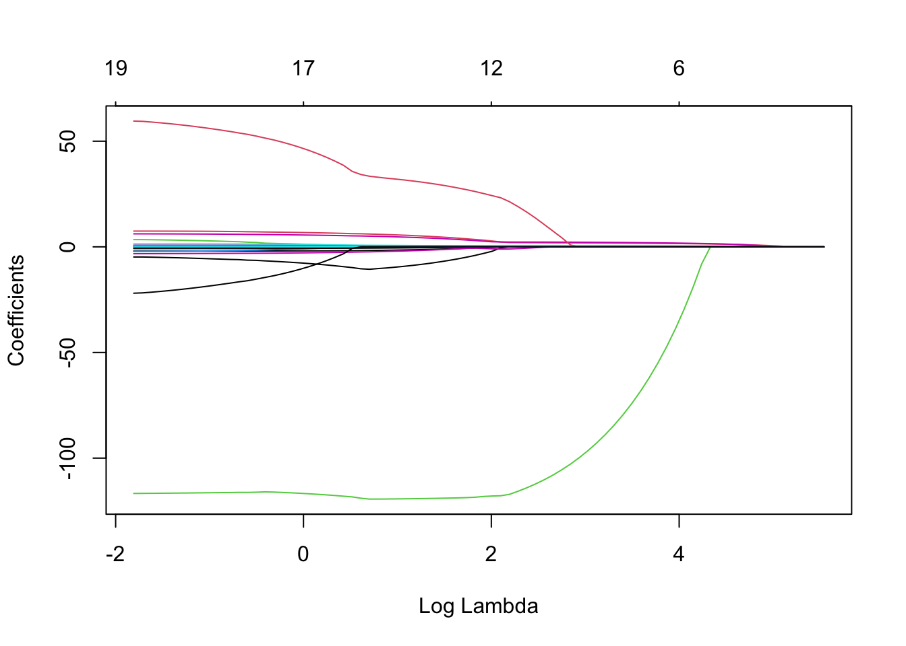
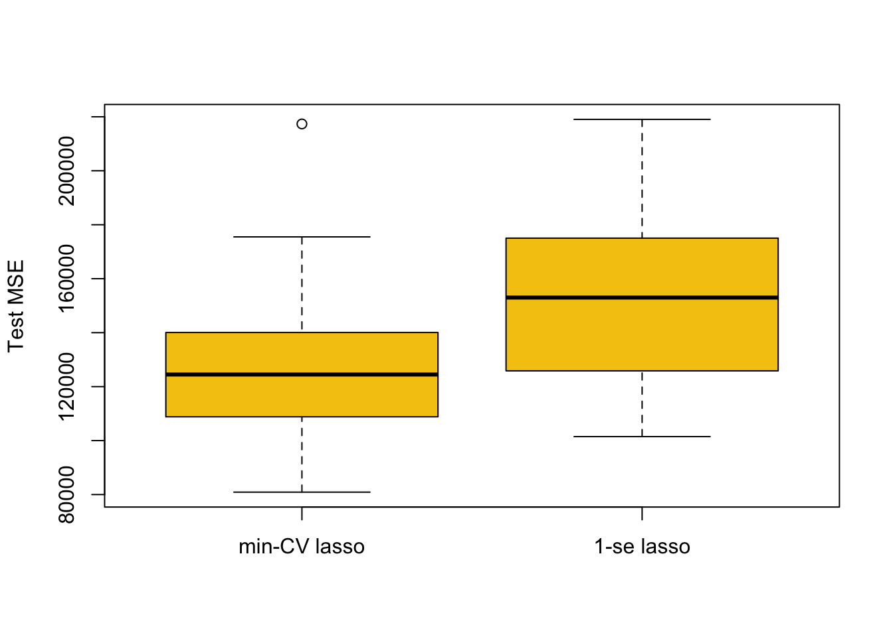

Chapter 5 Shrinkage Methods
5.1 Ridge and Lasso Regression
Performing Ridge Regression
To perform ridge regression, we use the package glmnet.
library(glmnet)Important Note: glmnet() uses different syntax than regsubsets().
Continuing example with Hitters data,
y = Hitters$Salary
# Here we exclude the first column because it corresponds to the intercept.
x = model.matrix(Salary ~ ., Hitters)[,-1]Note that model.matrix(Salary ~ ., Hitters)[,-1] is exactly the same as Hitters[,-19] (Salary has index 19), it just is all the data for the prediction variables.
Performing ridge regression just involves using the glmnet() function specifying alpha = 0 (for ridge).
ridge = glmnet(x, y, alpha = 0)To use a different number of \(\lambda\), change parameter nlambda which is 100 by default.
Extracting Information
names(ridge)## [1] "a0" "beta" "df" "dim" "lambda" "dev.ratio"
## [7] "nulldev" "npasses" "jerr" "offset" "call" "nobs"ridge$betacontains the values of the coefficients under each \(\lambda\) (useridge$beta[,1:3]to see first 3 for example).coef(ridge)contains exact same information asridge$betabut also includes intercept estimates.ridge$lambdacontains the grid of all \(\lambda\) values that were used.
5.1.1 Performing Lasso regression
Very similar to ridge but with alpha = 1 in glmnet(), which is the default so doesn’t need to be specified.
y = Hitters$Salary
x = model.matrix(Salary~., Hitters)[,-1]lasso = glmnet(x, y)Plotting \(\lambda\) against coefficient values
Ridge Coefficients Against Log \(\lambda\)
plot(ridge, xvar = 'lambda')
Ridge Coefficients Against \(L_1\) Norm
plot(ridge)
Lasso Coefficients Against Log \(\lambda\)
The top numbers indicate the number of predictors.
plot(lasso, xvar = 'lambda')
Lasso Coefficients Against \(L_1\) Norm
plot(lasso)
Cross-Validation
To find best \(\lambda\) with cross-validation, use cv.glmnet() instead.
ridge.cv = cv.glmnet(x, y, alpha=0)
names(ridge.cv)## [1] "lambda" "cvm" "cvsd" "cvup" "cvlo"
## [6] "nzero" "call" "name" "glmnet.fit" "lambda.min"
## [11] "lambda.1se" "index"ridge.cv$lambda.mingives the optimal \(\lambda\).ridge.cv$lambda.1segives the maximum \(\lambda\) 1 standard-error away from optimal lambda.
Plotting
In the plot below, the left dotted line highlights value of lambda.min and the right dotted line hightlights value of lambda.1se.
plot(ridge.cv)
abline( h = ridge.cv$cvup[ridge.cv$index[1]], lty = 4 )
To add these to the plots of coefficients against Log \(\lambda\),
plot(ridge, xvar = 'lambda')
abline(v = log(ridge.cv$lambda.min), lty = 3) # careful to use the log here and below
abline(v = log(ridge.cv$lambda.1se), lty = 3)
5.1.2 Comparing Predictive Performance For Different \(\lambda\)s
repetitions = 50
mse.1 = c()
mse.2 = c()
set.seed(1)
for(i in 1:repetitions){
# Step (i) random data splitting
training.obs = sample(1:263, 175)
y.train = Hitters$Salary[training.obs]
x.train = model.matrix(Salary~., Hitters[training.obs, ])[,-1]
y.test = Hitters$Salary[-training.obs]
x.test = model.matrix(Salary~., Hitters[-training.obs, ])[,-1]
# Step (ii) training phase
lasso.train = cv.glmnet(x.train, y.train)
# Step (iii) generating predictions
predict.1 = predict(lasso.train, x.test, s = 'lambda.min')
predict.2 = predict(lasso.train, x.test, s = 'lambda.1se')
# Step (iv) evaluating predictive performance
mse.1[i] = mean((y.test-predict.1)^2)
mse.2[i] = mean((y.test-predict.2)^2)
}
boxplot(mse.1, mse.2, names = c('min-CV lasso','1-se lasso'),
ylab = 'Test MSE', col = 7)